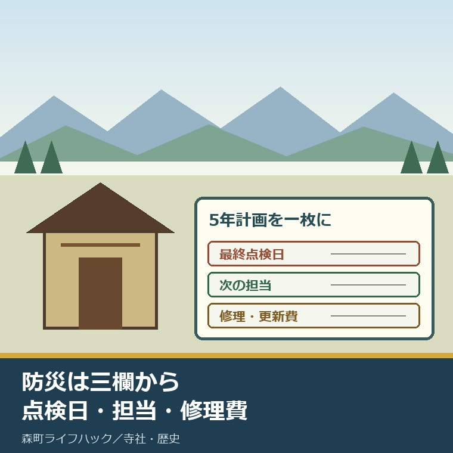
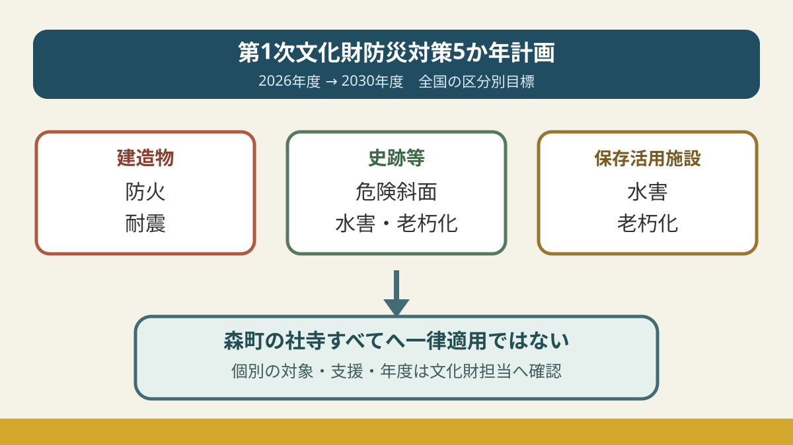
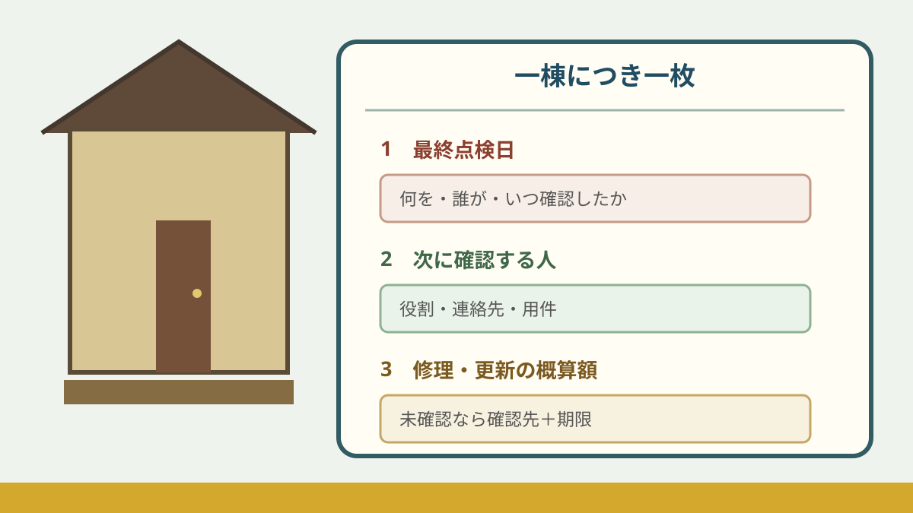

第1次文化財防災対策5か年計画｜森町の木造社寺

この記事の結論
Q. 第1次文化財防災対策5か年計画を、森町の木造社寺ではどう受け止めますか。
A. 国の2026～2030年度計画は、森町の各社寺への採択や補助を約束する通知ではありません。建造物の防火・耐震、史跡等や保存活用施設の水害・老朽化まで全国の備えを広げる枠組みです。所有者や保存団体は、国の件数を自分の社寺の対象件数と読まず、建物ごとに最終点検日、次に確認する人、修理・更新の概算額を一枚へ記録します。対象可否と支援内容は森町の文化財担当へ個別に確認してください。一度に工事を決めず、未確認の欄には確認先と期限を添えます。
森町の社寺や古建築は、所有者だけで守られているわけではありません。氏子、檀家、近隣の人、保存団体が、掃除、草刈り、鍵の管理、祭礼前の確認、修理の相談を重ねています。
雨の後に樋を見たり、落ち葉を片づけたり、消防設備の業者を手配したりする時間は、一覧表の件数には出ません。寄付や会費を頼む側も、払う側も、すでに負担を引き受けています。
まず、その努力が続いてきたことを前提にします。その上で、古い木造建築を同じ人の善意だけで支え続けるのは難しい、と具体的に言わなければなりません。
文化庁は2025年12月26日、「第1次文化財防災対策5か年計画」を公表しました。実施期間は2026年度から2030年度までです。
見出しだけなら「国が文化財を守る5年」に見えます。しかし計画本文を読むと、対象の種類、優先条件、所有者の準備、資金の考え方が分かれています。
森町の全木造社寺が国の重点対象になったわけでも、補助率や工事年が決まったわけでもありません。期待できることと、まだ決まっていないことを分けて読みます。
対案・結論｜全国5年計画を一枚の点検表へ落とす
国の計画を読んだあと、最初につくるのは工事の要望書ではありません。建物一つにつき一枚の点検表です。
表の一欄目は「最終点検日」です。消防設備、屋根、樋、柱、斜面など、何を誰がいつ見たかを分けます。
二欄目は「次に確認する人」です。所有者、総代、寺社関係者、設備業者、建築の専門家、消防、森町の文化財担当を、用件ごとに一人ずつ書きます。
三欄目は「修理・更新の概算額」です。見積済みなら金額と日付、未取得なら「未確認」と見積依頼先を書きます。
金額が分からないこと自体は失敗ではありません。「誰も調べていない」のか「依頼中」なのかが分からない状態を残すことが問題です。
国の5年は長く見えますが、建物側では台風、地震、落雷、設備故障の時期を選べません。2026年度に調べる項目と、2030年度までに工事を目指す項目を同じ欄へ押し込みません。
急ぐ順番は、命に関わる不具合、延焼や倒壊を広げる不具合、雨水で傷みを進める不具合、記録不足の順にします。ただし現地の専門判断が先で、この記事だけで危険度を決めません。
国の資料は全国の優先順位を示します。地域の一枚は、森町で次の電話を誰がかけるかを決めます。二つを混同しないことが出発点です。
良い点｜防火設備を付けて終わる計画ではない
前身の取組は、世界遺産や国宝等の建造物について、防火設備の整備を中心に進めてきました。今回の計画は、建造物の防火と耐震に加え、史跡等の水害や老朽化、保存活用施設の水害や老朽化も扱います。
ここは良い点です。火災だけを見ている間にも、地震、豪雨、斜面、設備の経年劣化は進むからです。
もう一つ良いのは、設備だけでなく運用を並べたことです。感知器や消火栓があっても、点検記録、通報、初期消火、近隣協力、消防との訓練がつながらなければ動きません。
計画本文は、所有者等に文化財ごとの対応プランを求め、計画的な資金積立や多様な財源の確保にも触れています。
地方公共団体についても、随伴する負担、民間資金、整備手法の助言などを通じた負担軽減を期待しています。所有者だけへ丸投げする書き方ではありません。
ただし「期待している」と、森町で使える制度が決まっていることは別です。国の方向が示されたことを良い材料にしつつ、窓口では個別条件を聞きます。
森町文化財保存活用地域計画が2026年7月に認定された意味も、国の防災5年計画とは別制度です。町の計画は2026年度から2035年度までの10年間で、期間も役割も同じではありません。

全国の5組の数値を、森町の対象件数と混同しない
文化庁の計画には、2026年度の出発点と2030年度の目標が数値で載っています。数字は進み具合を測るために必要ですが、森町の件数ではありません。
| 全国計画の分野 | 資料に示す母数・重点 | 完了等の出発点→2030年度目標 |
|---|---|---|
| 世界遺産・国宝の防火設備老朽化対応 | 対象236件、機能低下が判明107件 | 64件→106件 |
| 大規模な重要文化財建造物の防火 | 全国136棟、重点42棟 | 2棟→42棟 |
| 国宝・重要文化財建造物の耐震 | 全国1,997棟、重点194棟 | 95棟→139棟 |
| 史跡等の危険斜面 | 全国1,200か所、重点250か所 | 0か所→250か所 |
| 国指定美術工芸品の保存活用施設 | 全国689棟、重点100棟 | 水害・老朽化対応13棟→55棟 |
最初の防火設備は、5年間で64件から106件へ42件を積み増す目標です。機能低下が判明した107件すべて、と書かず、目標値106件をそのまま示します。
大規模重要文化財の防火は、重点42棟に対し2棟から42棟へ40棟を積み増します。単純平均なら年8棟の規模ですが、毎年8棟ずつ進む日程が決まったという意味ではありません。
耐震は、重点194棟に対して完了95棟から139棟へ44棟増やす目標です。重点194棟を2030年度までに全件完了する、と読み替えません。
史跡等の危険斜面は重点250か所を0から250か所へ、保存活用施設の水害・老朽化対応は13棟から55棟へ42棟増やす目標です。
42、40、44、250、42という増分を並べると、国が分野別に優先順位と到達点を置いたことが分かります。だからこそ、五つの数字を足して「森町で何件進む」とは言えません。
全国の母数が大きくても、森町の社寺が一棟含まれるかどうかは別の確認です。名称、指定区分、所有・管理、公開状況、設備の状態、緊急性など、個別情報が要ります。
計画は、設置から30年以上経過した火災受信機、感知器、消火ポンプ、配管などを老朽化対応の例に挙げています。
この30年は、一律の法定交換期限として示された数字ではありません。「30年を超えたら違反」「30年未満なら安全」とは書かず、設置年と保守点検結果を確認する目安にします。
森町の木造社寺へ引き寄せるときの境界
森町の寺院建築を紹介する町史資料ページは、曹洞宗27か寺、日蓮宗・真言宗・天台宗各2か寺、浄土宗1か寺を挙げています。合計34か寺ですが、ページ更新は2019年3月5日です。
同ページは、建立年代が分かる本堂のうち古い例として、三倉の栄泉寺本堂を1696年と紹介しています。屋根形式や改修履歴も、建物ごとに違います。
神社建築の町史資料ページは、宗教法人として登録された神社を町内約40社とし、古社殿、覆い屋、板葺、檜皮葺などを紹介しています。こちらも2019年3月5日更新です。
34か寺、約40社という紹介から、「全部が木造」「全部が国計画の対象」「2026年現在も同じ棟数」とは断定できません。古いページは、個別確認を始める入口として使います。
古い建物を残す価値は、年代だけでは決まりません。日常の礼拝、祭礼、地域の記憶、景観、建築技法が重なっています。
一方で、価値を語るだけでは屋根も配管も直りません。友田家住宅の古さを値打ちと費用に分けた記事で見たように、残す意味と修理負担は同時に書く必要があります。
森町の地域計画に関する報道資料は、2026年3月時点で指定等文化財116件、未指定文化財2,417件を把握したとしています。
同資料は、劣化や破損、実施できていない修理、担い手不足、知識を持つ町職員の不足を課題として挙げています。建物の傷みだけでなく、人と役場側の体制も課題です。
町の人に「もっと守って」とだけ言うのは足りません。すでに払っている時間、維持費、連絡調整を見える形にして、次の担い手へ渡せる単位へ小さくする必要があります。
藤江家住宅と旧周智郡役所の活用を比較した記事でも、鍵、清掃、修繕、財源を分けました。防災も、設備一式という大箱ではなく、点検と担当へ分けます。
注文したい点｜対象、支援、期限を同じ表で示してほしい
国が5年間の分野と数値目標を置いたことは前進です。設備と運用、所有者と地方公共団体の役割を一緒に書いた点も評価できます。
それでも所有者が知りたいのは、「うちの建物はどの区分か」「いつ相談するか」「自己負担はいくらか」「誰が見積を取るか」です。
報道発表だけでは、森町向けの予算額、個別社寺の採択、補助率、工事年度は確認できませんでした。全国目標の横に、個別相談で確認する欄が要ります。
支援の可能性を、交付決定のように伝えると、所有者は工事発注や寄付募集の時期を誤ります。逆に「どうせ対象外」と決めれば、相談の機会を失います。
分からない段階では、「対象未確認」「相談先は森町社会教育課文化振興係」「次回確認日」と書けばよい。未確認を隠さない表の方が、期待だけの説明より役に立ちます。
町にも、指定・登録・未指定を問わず相談の入口を分かりやすく示し、消防、建築、防災、文化財の担当へどうつなぐかを見えるようにしてほしいと思います。
ただ、町職員にも人員と専門知識の限界があることは、地域計画の資料自身が課題に挙げています。窓口へ全部預けるのではなく、所有者側の記録をそろえて相談時間を短くします。
防火、耐震、水害、老朽化を一度に工事しない
五つの分野を読んだ直後は、全部を一度に点検したくなります。しかし予算も人も限られています。
防火は、受信機、感知器、消火ポンプ、配管、水利、自動通報、点検記録、消防と連携した訓練を分けます。
耐震は、建物の指定区分を確認し、専門家へ予備診断の要否を聞きます。見た目だけで柱や基礎の安全性を決めません。
水害と斜面は、森町防災ハザードマップで所在地周辺の河川氾濫区域や土砂災害の表示、避難先を確認します。地図の色だけで個別建物の安全を断定せず、現地条件と重ねます。
老朽化は、雨漏り、樋、屋根、外壁、床、建具、電気設備を同じ「古い」でまとめません。写真の日付と範囲をそろえます。
祭礼や法要で人が集まる日は、通常日の管理と違います。公開範囲、立入禁止、避難経路、連絡係を、当日の運用欄に分けます。
近隣住民との協力も、善意という一語で済ませません。誰が119番するか、初期消火を誰が試みるか、鍵は誰が持つか、夜間に誰へ連絡するかを確認します。
できない項目があれば、できない理由を書きます。担い手がいない、設備年が不明、見積が高い、所有者同意が取れていない。理由が名詞になれば、次の相談先を選べます。

大石の視点｜三つの空欄を残したまま「5年ある」と思わない
全国計画の大きな数字を見ると、国が順番に直してくれるような安心感があります。正直、私も最初は、5年間の目標ができたことを強く打ち出したくなりました。
しかし、森町の個別社寺が対象か、補助率はいくらか、何年度に採択されるかは確認できていません。そこを飛ばして希望だけを書くのは、所有者の判断を軽く扱うことになります。
外から表を見て「点検すべきだ」と言うのは簡単です。現地では、鍵を開ける人、業者へ立ち会う人、氏子や檀家へ説明する人、費用を集める人が要ります。
その負担を認めずに改革を語りません。いまの担い手が続けてきた作業を一覧にし、後継の人が全部を背負わなくて済む形へ分けたいと思います。
文化財だから誰かが守る、では火事も雨漏りも待ってくれません。点検日、担当、修理費の三欄が空白なら、それは計画ではなく願いです。
荒い言い方ですが、計画という名前だけで現場の不安は減りません。逆に三欄のうち一つでも埋まれば、次の電話、次の見積、次の引継ぎへ進めます。
残すか、大きく直すか、公開するかは、所有者や地域が決めることです。この記事は結論を急がせず、決める前の材料をなくさないための順番を示します。
「決めない自由」を残すためにも、点検結果と概算だけは持っておく。壊れてから一択になる前に、選択肢を保つ記録です。
今日できる小さな一歩
今日することは一つです。社寺や古建築を一棟だけ選び、A4用紙の上に三つの欄を書いてください。
欄1：最終点検日――何を、誰が、いつ確認したか。
欄2：次に確認する人――氏名または役割、連絡先、用件。
欄3：修理・更新の概算額――見積日と金額。なければ「未確認」、依頼先、期限。
三欄とも埋める必要はありません。空欄を見つけたら「未確認」と書き、その横に確認先を一つ置きます。
最初の電話は、指定区分や国計画との関係なら森町社会教育課文化振興係、消防設備なら保守業者や消防、建物の状態なら文化財建造物に詳しい専門家へ分けます。
電話前に、建物名、所在地、所有・管理者、分かる範囲の指定区分、困っている箇所、写真の日付を一枚に添えると説明が短くなります。
今日決めるのは工事ではありません。次に誰が事実を確かめるかです。それなら、費用の結論が出ていなくても動けます。
まとめ
第1次文化財防災対策5か年計画は2026～2030年度です。建造物の防火・耐震に加え、史跡等や保存活用施設の水害・老朽化へ対象を広げ、設備と運用を一緒に扱います。
全国の236件、107件、136棟、42棟、1,997棟、194棟、1,200か所、250か所、689棟、100棟は、森町の社寺件数ではありません。個別対象、補助率、採択、年度は未確認です。
森町ではすでに多くの人が清掃、点検、祭礼、修理費の調整を担っています。その努力を次へ渡すため、最終点検日、担当、概算額の三欄を一棟分だけ作る。今日の一歩はそこです。
よくある質問
Q1. 第1次文化財防災対策5か年計画はいつからいつまでですか。
A1. 2026年度から2030年度までの5年間です。文化庁が2025年12月26日に公表し、建造物の防火・耐震、史跡等や保存活用施設の水害・老朽化などを、設備と運用の両面から扱います。
Q2. 森町の木造社寺はすべて国の重点対象になりますか。
A2. すべてが重点対象になるとは確認できません。国の数値は世界遺産、国宝、重要文化財、史跡等など全国の区分ごとの目標です。森町の個別社寺の対象可否、補助率、採択、実施年度は文化財担当へ確認が必要です。
Q3. 所有者や保存団体が今日できることは何ですか。
A3. 建物を一つ選び、最終点検日、次に確認する人、修理や更新の概算額という3欄を一枚に書いてください。不明欄は空白のままにせず「未確認」とし、確認先と期限を添えます。
指定区分、設備の更新、耐震診断、工事、支援制度は建物ごとに条件が違います。危険を感じる場合は立ち入らず、消防、森町、所有者、専門家へ確認してください。
参考にした公式情報
- 第1次文化財防災対策5か年計画の策定／文化庁（公表日2025年12月26日、実施期間2026～2030年度、対象分野を2026年9月9日に確認）
- 第1次文化財防災対策5か年計画本文／文化庁（全国の母数・重点対象・2030年度目標、設備と運用、所有者等と地方公共団体の役割を2026年9月9日に確認）
- 46 森町の寺院建築／静岡県森町（宗派別寺院数、栄泉寺本堂1696年、修理履歴の例、ページ更新日2019年3月5日を2026年9月9日に確認）
- 45 森町の神社建築／静岡県森町（宗教法人登録の神社約40社、古社殿や屋根形式、ページ更新日2019年3月5日を2026年9月9日に確認）
- 森町文化財保存活用地域計画の認定について／静岡県森町（2026年7月17日認定、計画期間2026～2035年度を2026年9月9日に確認）
- 森町文化財保存活用地域計画の報道資料／静岡県森町（2026年3月時点の指定等文化財116件・未指定文化財2,417件、劣化・修理・担い手・職員体制の課題を2026年9月9日に確認）
- 森町防災ハザードマップ／静岡県森町（地区別の土砂災害危険箇所、河川氾濫区域、避難所を2026年9月9日に確認）

磐田市で小さな不動産業を営みながら、森町の空き家・農地・実家じまいのご相談を受けています。地域と不動産実務をつなぐ目線で、確認の順番まで具体的に書きます。
最終確認日：2026-09-09 ／ 国の数値は全国計画の区分別目標です。森町の個別社寺の重点対象、補助率、採択、実施年度は確認できていないため断定していません。